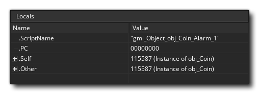

Le débogueur est un outil puissant pour vérifier votre jeu. Il est particulièrement utile pour repérer les erreurs et les bogues dans votre code, ainsi que pour vérifier que les scripts sont exécutés comme ils devraient être, et que les variables et les tableaux contiennent les valeurs que vous attendez, etc... Vous pouvez démarrer le débogueur en exécutant votre jeu à partir de l' GameMaker de GameMaker Studio 2 à l'aide du bouton Déboguer.  en haut de l'EDI, ou en allant dans le menu Build et en sélectionnant "Debug".
en haut de l'EDI, ou en allant dans le menu Build et en sélectionnant "Debug".
Lorsque vous exécutez un jeu en mode débogage, l'EDI affiche les différents outils disponibles pour le débogueur:
L'image ci-dessus montre la présentation par défaut du débogueur, mais comme pour d'autres aspects de l'EDI, vous pouvez le personnaliser selon vos besoins, en fermant des fenêtres dont vous n'avez pas besoin ou en modifiant la taille des documents et des fenêtres dont vous avez besoin. Vous pouvez réinitialiser la présentation du débogueur à tout moment - ou rouvrir des fenêtres fermées - à partir du menu contextuel du débogueur en haut de l'EDI: 
Ci-dessous, nous expliquons à quoi sert chaque section du débogueur:
La vue graphique affiche un affichage graphique de la manière dont votre projet utilise la mémoire et son framerate au fil du temps.:
Le graphique montre l’utilisation actuelle et moyenne de la mémoire, ainsi que les FPS actuels et moyens dans le temps, et vous pouvez effectuer un zoom avant ou arrière à l’aide de la touche
/
avec la molette de la souris
et si vous placez le curseur de la souris sur l’un des éléments du graphique, la valeur de cet élément s’affichera au point sélectionné.
La vue graphique affichera également certains événements de débogage sous forme de points le long de la longueur du graphique. Ces événements sont générés automatiquement par GameMaker Studio 2 à certains moments de l'exécution du jeu pour afficher des événements importants et spécifiques. Vous pouvez également ajouter vos propres éléments graphiques à l'aide des fonctions. show_debug_message() et debug_event(). Les événements système seront marqués dans une couleur différente de celle des événements déclenchés par le code:
Lorsque vous exécutez le jeu en mode de débogage et en survolant la souris sur ces événements, une liste de tous les événements déclenchés à ce stade du jeu s'affiche. Vous pouvez également afficher la liste dans une fenêtre distincte pour la réviser. " Cliquez pour ouvrir dans une nouvelle fenêtre " texte:
La vue Ressources affiche une liste de toutes les ressources utilisées dans le projet pouvant contenir du code ou des actions DnD™. Cette section fonctionne beaucoup comme l’arborescence des ressources et vous pouvez développer ses éléments pour afficher plus d’informations, par exemple les différents événements d’un objet spécifique. Vous pouvez ensuite double-cliquer
sur l'une des ressources pour ouvrir le code correspondant dans la fenêtre d' affichage du code, où vous pouvez vérifier les valeurs et ajouter ou supprimer des points d'arrêt.
Cette fenêtre affiche la pile d’événements en cours, ainsi que le numéro de ligne du code en cours d’exécution. Le débogueur devra avoir été mis en pause avant que toute information apparaisse ici.
La barre d’outils contient les commandes du débogueur ainsi que des informations de base telles que l’utilisation de la mémoire, le FPS actuel (réel) du jeu et un indicateur indiquant si le débogueur est actuellement connecté ou non (le voyant sera vert lorsqu’il est connecté à une instance en cours d’exécution). de votre projet et rouge sinon). Les contrôles disponibles sont:
Cela redémarre le jeu après sa pause (raccourci clavier f5 ). Cela mettra en pause le jeu. Redémarre la partie. Arrête la partie. Entrez dans un bloc de code ou un script (raccourci clavier f11 ). Passez sur un bloc de code ou un script (raccourci clavier f10 ). Sortir d'un bloc de code ou d'un script (raccourci clavier + f11 ).
Activer ou désactiver les mises à jour en temps réel pour les informations de débogage (cette option est désactivée par défaut). Les trois premiers boutons permettent de contrôler votre jeu, vous permettant de le démarrer, de le suspendre, de le redémarrer ou de l’arrêter à tout moment. Lorsque le jeu est en pause, soit en cliquant sur le bouton Pause ou à partir d'un point d'arrêt), vous pouvez ensuite utiliser les trois boutons "Pas à pas" pour parcourir votre code. Cela signifie simplement que vous pouvez dire à votre jeu d'exécuter la ligne de code actuelle, puis de passer à la suivante, vous permettant ainsi de parcourir l'intégralité de votre jeu, une ligne de code à la fois, si vous le souhaitez. Normalement, vous utiliseriez simplement le bouton Pas à pas pour le faire, mais vous en avez aussi un pour passer par le code et un pour sortir du code. Il est utile d’avancer lorsque vous devez exécuter des scripts volumineux. En cliquant dessus, vous exécutez le script ou le bloc de code en une seule étape, puis arrêtez-vous à la ligne suivante, puis sortez d’un script (ils seront exécutés)., mais tous en même temps) et arrêtez-vous à l’étape suivante lorsque la portée change. La dernière icône permet à la fenêtre de débogage de mettre à jour ses données en temps réel. Vous pouvez ainsi voir comment les variables changent ou les instances sont créées et détruites au fur et à mesure. Notez que cela peut affecter les performances des jeux et que toutes les informations ne sont pas disponibles en temps réel. Par exemple, la montre Render State (voir la section sur les montres ci-dessous) ne peut pas être visualisée en temps réel.
La vue code permet d’afficher et de réviser différents scripts ou codes d’événements de notre projet en cours d’exécution. Par défaut, cela commence vide, mais vous pouvez double-cliquer
Vous pouvez également utiliser le bouton droit de la souris pour ouvrir le menu contextuel, qui vous permet également d'ajouter ou de supprimer des points d'arrêt et de copier le code sélectionné dans le Presse-papiers.
Vous trouverez plus d'informations sur les points d'arrêt plus bas dans cette page.
Le débogueur est conçu pour vous permettre de "regarder" chaque détail de votre partie. Ceci est fait en utilisant des "fenêtres de surveillance" qui, par défaut, sont ouvertes dans la fenêtre de sortie ancrée au bas de l'EDI. Vous pouvez cliquer sur chacun des différents onglets pour afficher les montres qu’ils contiennent. Certains seront mis à jour en temps réel (comme les montres Global), tandis que d’autres (comme les montres Local) nécessiteront que le débogueur ait suspendu la partie. Nous avons répertorié chacune des fenêtres de surveillance ici séparément avec une explication de ce qu'elles font:

La fenêtre de sections locales affiche les propriétés de l’étape en cours, y compris le nom de l’événement (ou du script) en cours d’exécution, le décalage dans le code de la machine virtuelle pour le script en cours (le sigle "PC" désignant "programme"), le "self" instance exécutant le bloc de code et "autre" instance dans l'événement. Cette dernière partie n’est valable que lorsque l’événement est un événement de collision ou qu’il existe une with utilisé dans le code. Si l'instance est en collision, "autre" affichera l'autre instance (et ses variables) dans la collision, mais s'il s'agit d'une with alors l'instance "Self" devient celle qui exécute le code, tandis que "Other" est alors l'instance qui contient réellement le with. À tout autre moment, "autre" affichera simplement les mêmes données que "Soi". Après toutes ces informations, vous trouverez une liste de toutes les variables locales actuellement déclarées pour le bloc de code en cours d’exécution. Si vous faites un clic droit sur une valeur, vous pouvez définir son type (voir Types de données, ci-dessous) pour afficher les détails des structures de données.
La fenêtre Globals affiche une liste de toutes les variables globales déclarées et de leurs valeurs. Si vous faites un clic droit sur une valeur, vous pouvez définir son type (voir Types de données, ci-dessous) pour afficher les détails des structures de données.
Cette fenêtre vous permet d’ajouter une variable spécifique que vous souhaitez suivre. Cela peut être une variable de portée globale ou d'instance, une variable intégrée ou même un tableau ou une structure de données. Si le code d'instance en cours d'exécution contient la variable surveillée, il apparaîtra ici, ce qui signifie que vous pouvez facilement suivre une valeur sans avoir à la rechercher dans les fenêtres Locals ou Globals. Si vous faites un clic droit sur une valeur, vous pouvez définir son type (voir Types de données, ci-dessous), le supprimer ou effacer toutes les analyses de la fenêtre. Vous pouvez également modifier certaines des valeurs des variables affichées en double-cliquant simplement sur
Comme son nom l’indique, cette fenêtre affiche toutes les variables d’instance, les variables locales et les variables intégrées associées à l’instance en cours de progression dans la fenêtre Source (si une instance est référencée à l’aide du mot-clé "other" ou with déclaration, cette fenêtre affichera alors les propriétés de cette instance).
Si vous avez besoin de voir toutes les instances qui se trouvent actuellement dans la pièce, vous pouvez sélectionner cette fenêtre et elles seront répertoriées. Vous pouvez également voir l'état de toutes les variables intégrées ou d'instance dont ils disposent, et vous pouvez cliquer avec le bouton droit de la souris. sur une valeur pour définir son type (voir Types de données, ci-dessous)
Cette fenêtre est pour lorsque vous sélectionnez une instance de votre jeu. Pour ce faire, il suffit de suspendre le jeu, puis de cliquer sur une instance visible dans la fenêtre du jeu. L'information trouvée sous le curseur de la souris aura alors ses informations affichées dans la fenêtre Instance sélectionnée, où vous pourrez voir ses variables intégrées et d'instance, les mêmes que pour la fenêtre Instances.
Cette montre vous montre toutes les informations disponibles pour l'état de l'image en cours de rendu, comme l'alpha de dessin ou la couleur de remplissage. Cela ne peut pas être mis à jour en temps réel, vous devrez donc suspendre le jeu pour obtenir et mettre à jour les détails du cadre.
Cette montre vous permet de voir exactement ce qui est dessiné sur toutes les surfaces de votre jeu (y compris le application surface ) ainsi que voir les pages de texture qui sont en mémoire. Vous pouvez sélectionner des textures ou des surfaces dans la partie inférieure de la montre, puis passer la souris sur l’ID de texture ou de surface pour l’afficher dans une fenêtre contextuelle.
Notez que le débogueur doit être suspendu avant que ceux-ci soient mis à jour.
Cette fenêtre est la fenêtre où vous pouvez voir le profil système actuel du jeu testé, où vous pouvez tout contrôler dans votre jeu, des événements entiers aux appels de fonction individuels, pour voir comment ils se comportent et repérer les zones de problèmes ou les goulots d'étranglement. Pour plus d'informations sur le profilage, reportez-vous à la section plus bas sur cette page.
Si vous avez initialisé des tampons dans votre jeu, cette fenêtre vous montrera les données du tampon. Vous pouvez sélectionner n’importe quel tampon créé en définissant la valeur d’ ID de tampon, qui commencera à 0 pour le premier tampon créé dans votre jeu et augmentera de 1 pour chaque tampon consécutif.
Si vous faites un clic droit Dans la fenêtre de données ou cliquez sur le bouton Affichage des données, vous pouvez sélectionner le mode d'affichage des données, définir l'alignement et le type, ainsi que le mode de présentation des données dans la zone de sélection de colonne. Il existe une fenêtre déroulante dans laquelle vous pouvez sélectionner une liste de mises en page par défaut.


Il est important de noter que pendant que le jeu est en cours d'exécution, il ne met pas à jour les fenêtres de débogage avec des valeurs variables et d'autres détails par défaut. Par conséquent, vous devez d'abord utiliser le bouton Pause.  dans le débogueur pour mettre le jeu en pause avant que les sections locales, les globales et autres données soient disponibles, ou pour permettre la mise à jour en temps réel à partir des icônes situées en haut . La seule exception à cette règle est la vue Profil, qui est mise à jour en temps réel lorsqu'elle est activée indépendamment du commutateur en temps réel, car elle possède son propre bouton d'activation / désactivation.
dans le débogueur pour mettre le jeu en pause avant que les sections locales, les globales et autres données soient disponibles, ou pour permettre la mise à jour en temps réel à partir des icônes situées en haut . La seule exception à cette règle est la vue Profil, qui est mise à jour en temps réel lorsqu'elle est activée indépendamment du commutateur en temps réel, car elle possède son propre bouton d'activation / désactivation.
Types de données
Lorsque vous regardez une variable dans l'une des fenêtres, il peut s'agir de plusieurs types de données. Cependant, en raison de la manière dont GameMaker Studio 2 stocke certaines choses, le débogueur ne sait pas toujours exactement ce que la variable contient. En effet, les valeurs d'ID internes des structures de données ou des instances sont des entiers. Le débogueur ne sait donc pas toujours si la valeur entière stockée dans une variable correspond à une structure de données ou à une instance ou s'il s'agit simplement d'une valeur entière. Pour cette raison, vous pouvez faire un clic droit sur n'importe quelle valeur de variable et obtenez une fenêtre contextuelle qui répertorie les types de données disponibles pouvant être cette variable. 
Les chaînes et les tableaux n'autorisent pas cette option, et il convient de noter que même si une structure de données est stockée dans une variable d'instance, son numéro d'identification est global. Par conséquent, si vous avez quatre instances et que chacune crée une ds_list (par exemple), chaque liste aura un identifiant de 0 à 3, et elles ne seront pas toutes égales à 0.
Une fois que vous avez sélectionné votre type de données, la variable affichera les entrées dans la structure en cliquant simplement sur le petit à côté de son nom. Cela élargira le contenu des structures et, dans le cas de la fenêtre "Montres", vous permettra également de les modifier.
Points d'arrêt
Un point d'arrêt est un endroit dans votre code de projet où vous souhaitez qu'il s'arrête afin que vous puissiez voir ce qui se passe. Lorsque le débogueur est en cours d'exécution, vous pouvez ajouter ou supprimer des points d'arrêt à tout moment et dans n'importe quel code ou bloc de script en cliquant dessus.  dans la gouttière (où se trouvent les numéros de ligne), ou vous pouvez utiliser le bouton droit de la souris pour ouvrir le menu contextuel, qui vous permet également d'ajouter ou de supprimer des points d'arrêt:
dans la gouttière (où se trouvent les numéros de ligne), ou vous pouvez utiliser le bouton droit de la souris pour ouvrir le menu contextuel, qui vous permet également d'ajouter ou de supprimer des points d'arrêt:

Les points d'arrêt peuvent également être définis à partir de l' GameMaker Studio 2. Lors de la rédaction de votre projet, ils peuvent être ajoutés ou supprimés à tout moment en utilisant f9 (ou en utilisant le bouton droit de la souris et en sélectionnant "Basculer le point d'arrêt"), soit sur une action dans la fenêtre de l'objet, soit sur une ligne dans une fenêtre de l'éditeur de code. Désormais, lorsque vous exécutez votre jeu en mode débogage, il marque une pause au niveau du ou des points que vous avez définis. Les points d'arrêt définis à partir de l'EDI sont enregistrés avec votre projet et persisteront jusqu'à ce qu'ils soient supprimés. Toutefois, si vous ajoutez un point d'arrêt à votre code dans le débogueur, il sera perdu après la fermeture du module ou le lancement d'une nouvelle exécution de test.. Notez que tous les points d'arrêt apparaîtront dans la fenêtre de sortie et qu'ils peuvent être activés, désactivés ou même supprimés.
Profilage
Le débogueur vous permet de parcourir votre code et de rechercher les problèmes éventuels avec la base de code, mais vous devez parfois vérifier les détails les plus subtils afin d'optimiser correctement vos jeux. L’option Profil facilite cette tâche en vous donnant un aperçu des performances, indiquant le temps requis pour appeler des fonctions, des scripts et même le temps qu’il a fallu pour terminer un événement spécifique. 
Outre la fenêtre principale affichant tous les événements, scripts et fonctions appelés, vous disposez des options suivantes pour utiliser le profileur:
C'est le bouton pour activer ou désactiver le profileur. Lorsque cette option est activée, le profileur démarre et vous verrez que les événements, scripts et fonctions sont répertoriés dans la fenêtre principale avec différentes valeurs de données pour chacun d’eux. Le mode d'affichage de ces données dépend de l'affichage de l'heure et du mode d'affichage (expliqués plus loin dans cette page).
Cette case à cocher vous permet de basculer entre le temps moyen et le temps absolu pour le profileur. Si cette case n'est pas cochée, les valeurs affichées dans la fenêtre principale correspondent au nombre total d'appels effectués à la fonction, au script ou à l'événement et au temps total pris (les temps sont exprimés en microsecondes ) au cours du profil. Toutefois, si vous activez cette option, ces colonnes indiquent le temps moyen pris par étape pour chaque fonction, script ou événement, ainsi que le nombre moyen d'appels.
Ce menu vous permet de choisir le mode d'affichage, qui peut être de haut en bas ou de bas en haut.
En sélectionnant le mode d'affichage Top Down, le profil apparaît de haut en bas (plus ou moins identique à la hiérarchie de pile d'appels), ainsi l'événement, le script et toutes les fonctions utilisées. Notez que vous pouvez double-cliquer
Si vous sélectionnez le mode d’affichage Bas par le haut, les éléments affichés de bas en haut vous permettront de voir toutes les fonctions et tous les appels de script individuellement. Lorsque vous utilisez ce mode de visualisation, cliquez sur le bouton développera la fonction ou le script pour montrer comment il s’appelle réellement.
La cible de vue vous permet de choisir entre l'affichage du GML du projet (données d'événement et de code), des processus du moteur d'arrière-plan ou des deux. Si vous choisissez "GML", les événements, les fonctions et les scripts sont appelés à chaque étape, tandis que la vue "Moteur" affiche uniquement les appels de moteur requis par le projet, ce qui vous permet de voir les goulots d'étranglement dans la manière dont votre projet gère les choses. Si vous sélectionnez "Les deux", les deux ensembles de données s'afficheront, mais notez que, une fois combinés à la vue "Bottom Up", les différents appels de script et de fonction seront imbriqués dans les appels de moteur et vous devrez cliquer sur le bouton. d'élargir ceux-ci pour les voir.
Les données de profil sont affichées dans quatre colonnes. Un clic sur l’une d’elles permettra de trier les données en fonction des critères de colonne.

- Nom - Il s’agit du nom de l’événement, du script ou de la fonction appelée, et peut avoir un à côté de celui-ci pour indiquer d'autres appels à destination ou à partir de celui-ci (selon le mode de visualisation sélectionné). Vous pouvez double-cliquer sur l'un des noms pour qu'il ouvre le bloc de code ou le script dans la fenêtre Source. En cliquant en haut de cette colonne, les noms seront triés par ordre alphabétique.
- Time - Ceci affichera soit le temps total pris par une fonction (ou un script ou un événement) pendant le profilage, soit le temps moyen pendant lequel chaque étape a été appelée (en fonction de l'option d'affichage du temps sélectionnée). microsecondes.
- Appels - Vous pouvez voir ici le nombre total d'appels pour l'événement, la fonction ou le script donné, ou le nombre moyen d'appels, en une seule étape (en fonction de l'option d'affichage de l'heure sélectionnée).
- Step% - La valeur indiquée ici correspond au pourcentage global d'une étape prise par l'appel.